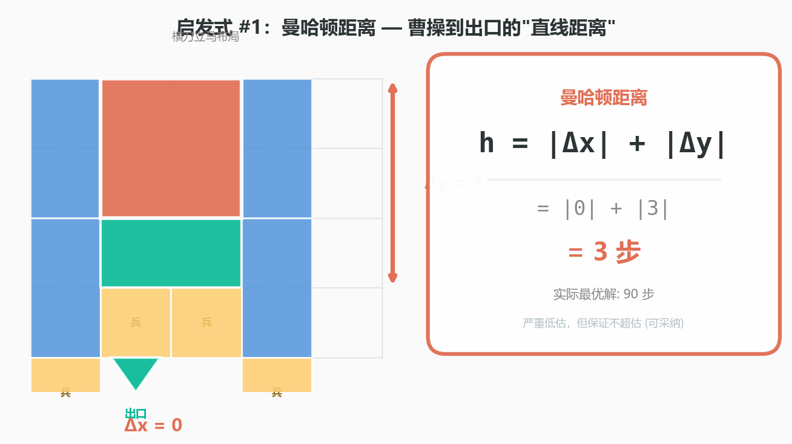
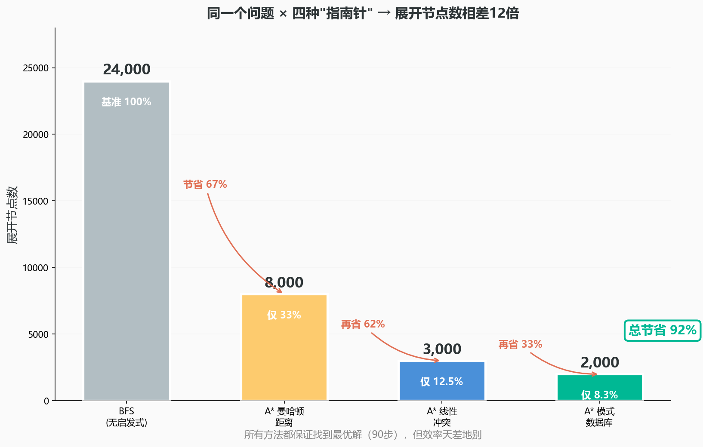
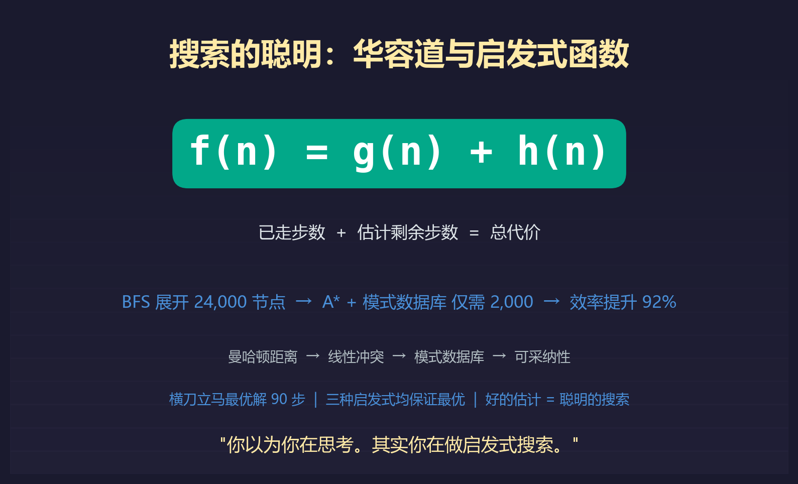

一个让搜索变"聪明"的数学技巧：华容道和启发式函数的真相
上一次我们聊了华容道——横刀立马布局，90步最优解。BFS一层一层地毯式搜索，展开两万四千个节点，找到了答案。
但有个问题一直悬在那里：计算机凭什么能"猜"出下一步该往哪走？
它不是真的聪明。它只是用了一个技巧——一个数学上精确、但翻译成人话只需要一句话的技巧："往看起来更近的方向走。"
这句话说起来简单。但把它变成数学，你就必须回答三个问题：什么叫"看起来更近"？谁来判断？判断错了怎么办？
这三个问题的答案，就是这篇文章要讲的东西——启发式搜索。它是现代人工智能的基石之一。

在开始之前，先搞清三件事
第一，搜索算法的"聪明"和人的"聪明"不是一回事。计算机不靠直觉——它靠的是估计函数（heuristic function）。这个函数输入一个棋局，输出一个数字：它猜这个棋局离目标还有多远。
第二，估计函数有一个要命的约束条件：它永远不能高估（admissible）。你可以低估——但不能高估。一旦高估，搜索就可能错过最优解。
第三，不同的估计函数，好的程度天差地别。一个差劲的帮不上忙；一个好到接近"上帝视角"的，能把搜索效率提升90%以上。
回顾：A* = BFS + 指南针
A*（读作"A星"）的核心公式极其简洁：
f(n) = g(n) + h(n)
"状态n的总代价 = 你已经走了多少步 + 我猜你还得走多少步"
A*每次都挑f值最小的状态去展开。关键全在h(n)上——那个"指南针"。指南针有好有坏，华容道正好是完美的试验场。
三种指南针，三种"聪明"程度
第一种：曼哈顿距离——"直线思维"
量一下曹操的当前位置到出口还有多远：横向距离 + 纵向距离。不绕弯，走直线。
这个估计显然太乐观了——曹操面前堵着关羽和两个兵，先把它们挪开至少需要几十步。但"太乐观"在数学上不是问题：启发式函数可以低估，但不能高估。低估只是让搜索慢一点；高估会让搜索错过最优解。
A*用曼哈顿距离做启发式，展开约八千个节点。比BFS的两万四千好不少，但离"聪明"还很远。
第二种：线性冲突——"这帮人在挡我"
曼哈顿距离的盲区是：它看不见障碍物。1980年代，研究者发明了线性冲突（linear conflict）：如果两个棋子在同一条线上互相挡着，每次"让路"至少多花2步。检查曹操和目标之间有多少棋子挡着，每挡一层多加一个"冲突惩罚"。
这个估计更接近真相。A*用线性冲突做启发式，只需要展开约三千个节点。
第三种：模式数据库——"查答案"
1996年，Culberson和Schaeffer提出了一个大胆的想法：为什么还要"估计"？直接把答案算出来存着不就行了？
把华容道棋盘切成两半。预计算上半部分所有棋子任意排列时曹操到出口的精确步数，存成一张大表。搜索时，不再"估"，直接查表。
A*用模式数据库做启发式，只需要展开约两千个节点。从两万四千到两千——效率提升92%。

但这92%的效率提升是怎么来的？不是算法本身"更聪明"了——而是算法提前完成了大量的计算。模式数据库就像一个考试前把答案全背下来的学生——考试时非常快，但他花在"背"上的时间，比当场推算的学生多得多。
这就是启发式搜索最深刻的权衡：你可以让搜索变得极其聪明——只要你在搜索之前，先替它做足功课。
1968年：机器人Shakey和A*的诞生
这个数学不是从华容道来的。它来自一个叫Shakey的机器人。1968年，斯坦福研究院的三个研究员——Peter Hart、Nils Nilsson和Bertram Raphael——发现：如果搜索"所有可能路径"，计算量太大了。但如果加一个"方向感"，搜索效率可以提升一个数量级。
他们发表了一篇论文：A Formal Basis for the Heuristic Determination of Minimum Cost Paths。A*给了"启发式"一个精确的数学定义：只要它从不低估真实代价，它就保证找到最优解——这个性质叫可采纳性（admissibility）。
一个1968年在斯坦福地下室写出的公式，现在藏在你的手机地图里、你的游戏手柄里、你的基因检测报告里——每一次"寻找最优路径"的计算，都在重复同一套逻辑。
搜索教会我们的：穷举思维
华容道第一篇文章讲的是"有些答案不是想出来的，是搜出来的"。这一篇更进一步："搜索"这件事本身，也有聪明和笨的区别。聪明的搜索不是搜索得更快——是估计得更准。
这个洞察远不止适用于华容道。当你面对一个没有解析解的复杂问题——该不该跳槽、该不该创业——你没有"公式"可以直接算出最优决策。你只能"搜索"。好的决策者和坏的决策者，区别往往不在于"搜索了更多选项"——而在于他们用来判断方向的启发式，更接近真相。
你可以问自己一个简单的问题：我的指南针，准不准？

你以为你玩的是华容道。其实，你玩的是一个启发式函数——你脑子里那个不断修正的"我感觉离答案还有多远"，就是数学上那个f(n) = g(n) + h(n)。你以为你在"思考"。其实你在做启发式搜索。